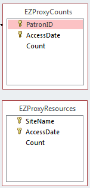

Analyzing high-volume EZproxy data
EZproxy is a software package used by many libraries to provide access to subscription-based services for remote users. It allows users who have logged in to access databases and journals as if they were in the library. As part of this process, it logs web requests mady by users. This is an example of a possible line from an EZproxy log.
132.174.1.1 jkfdaj54as 124325 [14/Mar/2008:09:39:18 -0700] "GET http://www.somedb.com:80/index.html HTTP/1.0" 200 1234
This may seem difficult to understand, but there is a very well-defined format to each line. The line above, for example, says that the user in the US Mountain time zone whose ID is 124325, and whose computer's address is 132.174.1.1, requested the file at http://www.somedb.com:80/index.html at 9:39 in the morning on March 14th, 2008. The request was successful and they received 1234 bytes of data.
The fields shown above are just some of the ones that are available. The format of the lines in the log file is determined by your EZproxy configuration. Your IT department may have configured your EZproxy installation to record different information. The line shown above is an example of the default configuration, so it is fairly safe to assume that at least the fields shown will be included.
With the above pieces of information, we can think about the types of questions we'd like to ask. The first two that spring to mind are "How often are users accessing online resources?" and "Which resources get used the most?" With those in mind, we can design two tables to store the information. Since the data volume is so large, we will just store aggregate counts. In the table to track users, we'll store the number of requests each user made per day, and in the table to track resources, we'll track the number of times each resource was accessed each day.

With that design done, we can then look at how to generate the information that we're interested in. This isn't a simple one-to-one mapping like in our other use cases, so we'll need to do some preprocessing on the data. At first glance, it might seem like we can just count the number of requests made by each user, and put that directly into the table.
In reality, it isn't actually that simple. Any time you view a web page, your browser makes a request like the one above for the web page itself, resulting in a line just like that. However, the web page may include images, videos, or additional scripting code for interactive features, all of which have to be requested independently, and each of which results in their own log line like the one above. This means that a single web page could result in tens or hundreds of log lines being generated. Most of these lines will be from related web sites as well, so counting every line will artificially inflate both the user request numbers, and the resource access numbers.
In order to get some interesting data out of the logs, we can make an educated guess about what they are going to look like. Most web sites load in just a few seconds, so if we see a bunch of log entries for the same user in quick succession, we can assume they were the result of the user making a single request, and just record it as a single request. We'll just treat the target of the initial request, the one that the user actually made, as the requested resource. It turns out that just applying this technique gets us much better results.
All of the work of processing the log files is handled by the ezproxy_import.py script, which is discussed in the section on Importing EZproxy Data.